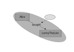

Reifiers
RDF-star WG
TPAC 2024
Anaheim CA, USA
hybrid meeting
23–27 SEPTEMBER 2024
(Slides by Niklas Lindström, National Library of Sweden.)
A Simple Triple

<Alice> :bought <LennyTheLion> .
A propositional atom.
RDF 1.2: Triple Terms
A new kind of term, alongside IRIs, bnodes and literals.
<<( <Alice> :bought <LennyTheLion> )>>
- Compound, immutable three-tuples.
- Act as references to triples (the edges of the interpretation).
Triple Terms are Abstract
They are not occurrences, tokens or utterances.
Such things are concrete reifying resources of abstract triples.
Anything that acts as a concretization of abstract propositions is a reifier. It may be a contextual reference, event or circumstance, having a distinct identity and characteristics of its own.
These are associated to triples using the property rdf:reifies.
Reifier Syntax
[] a rdf:Resource ;
rdf:reifies
<<( <Alice>
:bought
<LennyTheLion> )>> .
Reifier Sugar
<< <Alice> :bought <LennyTheLion> >>
a rdfs:Resource .

Reifier and Assertion
<< <Alice> :bought <LennyTheLion> >>
a rdfs:Resource .
<Alice> :bought <LennyTheLion> .
Annotation Sugar
<Alice> :bought <LennyTheLion> {|
a rdfs:Resource
|} .
Naming Reifiers
<< <Alice> :bought <LennyTheLion> ~ <r1> >> .
<r1> a rdfs:Resource .
<Alice> :bought <LennyTheLion> ~ _:r1 .
_:r1 a rdfs:Resource .
Kinds of Reifiers
The type of the reifier determines its nature (may be implied by predicates).
- References (utterances, source provenance).
- Circumstances (qualifying events or situations).
Provenance
<Alice> :bought <LennyTheLion> {|
a :Transaction ;
:source :TXZ ;
:tstamp "0x66e"
|} .

Qualification
<Alice> :bought <LennyTheLion> {|
a :Purchase ;
:seller :ToyStore ;
:date "2024-06"
|} .
Qualifications
<Alice> :bought <LennyTheLion> {|
a :Purchase ;
:seller :ToyStore ;
:date "2024-06"
|} {|
a :Purchase ;
:seller :Market ;
:date "2024-12"
|} .

Compound Qualification
<Alice> :bought
<LennyTheLion> ~ _:r1 .
:ToyStore :sold
<LennyTheLion> ~ _:r1 .
_:r1 a :Purchase ;
:date "2024-06".
Compound Provenance
<Alice> :bought
<LennyTheLion> ~ _:r2 .
:ToyStore :sold
<LennyTheLion> ~ _:r2 .
_:r2 a :Transaction ;
:tstamp "0x66e".

Varying Granularity
Use cases show reifiers of varying type, granularity and scope.
Examples include
source tokens of granular provenance, and
qualification of "too simple" relations needing more contextual detail.
In many cases singular triples need to be reified. But some are of multiple triples at once. The previous example showed bought and sold relations abstracted from a Purchase.
Name Forms
Another example is modelling of person names.
Some define just name; others, givenName and familyName.
A Naming may thus reify a single or multiple triples, depending on the modelling choice.
GRAPH <model-1> {
<Alice> :name "Alice Liddell" {|
a :Naming ;
:date "1852" |} .
}
GRAPH <model-2> {
<Alice> :givenName "Alice" ~ _:n ;
:familyName "Liddell" ~ _:n .
_:n a :Naming ;
:date "1852" .
}
Historical Circumstances (1)
<Anne_Bonny> a :Person ;
:name "Anne Bonny" ;
:birthDate "1697" ;
:birthPlace <Kinsale,Ireland> ;
:spouse <James_Bonny> ;
:partner <John_Rackham> ;
:occupation <Pirate> ;
:deathDate "1733-12-29" ;
:placeOfBurial <Spanish_Town,Jamaica> .
Historical Circumstances (2)
<Anne_Bonny> a :Person ;
:name "Anne Bonny" ;
:birthDate "1697" ~ <#ref001> ;
:birthPlace <Kinsale,Ireland> ~ <#ref001> ;
:spouse <James_Bonny> ~ <#marriage1> ~ <#ref001> ;
:partner <John_Rackham> ~ <#piracy> ~ <#ref001> ;
:occupation <Pirate> ~ <#piracy> ~ <#ref001> ;
:deathDate "1733-12-29" ~ <#ref002> ;
:placeOfBurial <Spanish_Town,Jamaica> ~ <#ref002> .
<< <Anne_Bonny> :deathDate "1782-04-25" ~ <#ref001> >> .
Historical Circumstances (3)
<#ref001> a :Reference ;
:source <http://www.encyclopedia.com/doc/1G2-3446400036.html> ;
:date "2024-08-14T12:48:07Z" .
<#ref002> a :Reference ;
:source <SaintCatherinesParishBurialRecord> ;
:date "2024-08-14T13:13:31Z" .
<#marriage1> a :Marriage ;
:startDate "1716" ~ <#ref001> .
<#piracy> a :Endeavour ;
:startDate "1720" ~ <#ref001> .
Thank You!
Time for questions?